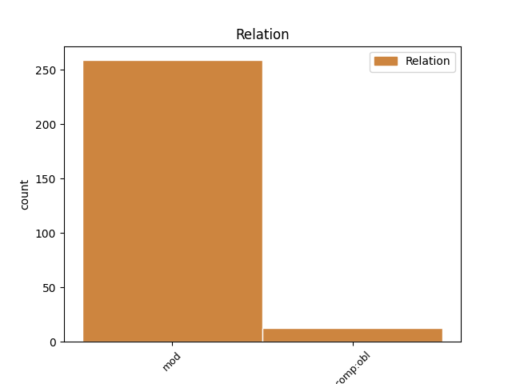
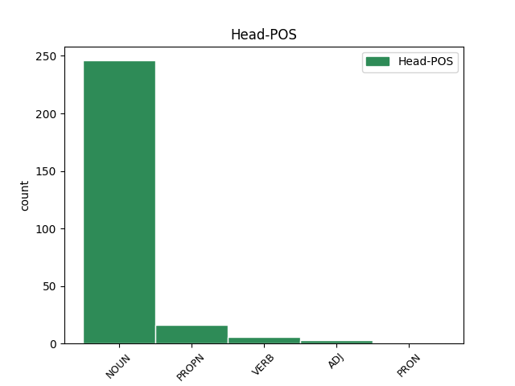
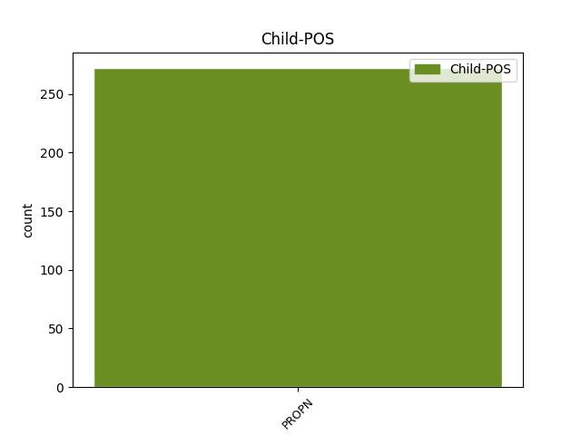

Distribution of features within this leaf



Agreement Rules sorted by frequency.
- When the dependent token is the modifer(mod) of the head token, and the dependent token is PROPN.
1 nu _ _ _ _ 0 _ _ _
2 fagino _ _ _ _ 0 _ _ _
3 in _ _ _ _ 0 _ _ _
4 þaimei _ _ _ _ 0 _ _ _
5 winna _ _ _ _ 0 _ _ _
6 faur _ _ _ _ 0 _ _ _
7 izwis _ _ _ _ 0 _ _ _
8 jah _ _ _ _ 0 _ _ _
9 usfullja _ _ _ _ 0 _ _ _
10 gaidwa _ _ _ _ 0 _ _ _
11 aglono aglo NOUN Nb Case=Gen|Gender=Fem|Number=Plur 0 _ _ _
12 Xristaus Xristus PROPN Ne Case=Gen|Gender=Masc|Number=Sing 11 mod _ ref=COL_1.24
13 in _ _ _ _ 0 _ _ _
14 leika _ _ _ _ 0 _ _ _
15 meinamma _ _ _ _ 0 _ _ _
16 faur _ _ _ _ 0 _ _ _
17 leik _ _ _ _ 0 _ _ _
18 is _ _ _ _ 0 _ _ _
19 þatei _ _ _ _ 0 _ _ _
20 ist _ _ _ _ 0 _ _ _
21 aikklesjo _ _ _ _ 0 _ _ _
22 þizozei _ _ _ _ 0 _ _ _
23 warþ _ _ _ _ 0 _ _ _
24 ik _ _ _ _ 0 _ _ _
25 andbahts _ _ _ _ 0 _ _ _
26 bi _ _ _ _ 0 _ _ _
27 ragina _ _ _ _ 0 _ _ _
28 gudis _ _ _ _ 0 _ _ _
29 þatei _ _ _ _ 0 _ _ _
30 giban _ _ _ _ 0 _ _ _
31 ist _ _ _ _ 0 _ _ _
32 mis _ _ _ _ 0 _ _ _
33 in _ _ _ _ 0 _ _ _
34 izwis _ _ _ _ 0 _ _ _
35 du _ _ _ _ 0 _ _ _
36 usfulljan _ _ _ _ 0 _ _ _
37 waurd _ _ _ _ 0 _ _ _
38 gudis _ _ _ _ 0 _ _ _
39 runa _ _ _ _ 0 _ _ _
40 sei _ _ _ _ 0 _ _ _
41 gafulgina _ _ _ _ 0 _ _ _
42 was _ _ _ _ 0 _ _ _
43 fram _ _ _ _ 0 _ _ _
44 aiwam _ _ _ _ 0 _ _ _
45 jah _ _ _ _ 0 _ _ _
46 fram _ _ _ _ 0 _ _ _
47 aldim _ _ _ _ 0 _ _ _
48 iþ _ _ _ _ 0 _ _ _
49 nu _ _ _ _ 0 _ _ _
50 gaswikunþida _ _ _ _ 0 _ _ _
51 warþ _ _ _ _ 0 _ _ _
52 þaim _ _ _ _ 0 _ _ _
53 weiham _ _ _ _ 0 _ _ _
54 is _ _ _ _ 0 _ _ _
55 þaimei _ _ _ _ 0 _ _ _
56 wilda _ _ _ _ 0 _ _ _
57 guþ _ _ _ _ 0 _ _ _
58 gakannjan _ _ _ _ 0 _ _ _
59 gabein _ _ _ _ 0 _ _ _
60 wulþaus _ _ _ _ 0 _ _ _
61 þizos _ _ _ _ 0 _ _ _
62 runos _ _ _ _ 0 _ _ _
63 in _ _ _ _ 0 _ _ _
64 þiudom _ _ _ _ 0 _ _ _
65 þatei _ _ _ _ 0 _ _ _
66 ist _ _ _ _ 0 _ _ _
67 Xristus _ _ _ _ 0 _ _ _
68 in _ _ _ _ 0 _ _ _
69 izwis _ _ _ _ 0 _ _ _
70 wens _ _ _ _ 0 _ _ _
71 wulþaus _ _ _ _ 0 _ _ _
72 þanei _ _ _ _ 0 _ _ _
73 weis _ _ _ _ 0 _ _ _
74 gateiham _ _ _ _ 0 _ _ _
75 talzjandans _ _ _ _ 0 _ _ _
76 all _ _ _ _ 0 _ _ _
77 manne _ _ _ _ 0 _ _ _
78 jah _ _ _ _ 0 _ _ _
79 laisjandans _ _ _ _ 0 _ _ _
80 all _ _ _ _ 0 _ _ _
81 manne _ _ _ _ 0 _ _ _
82 in _ _ _ _ 0 _ _ _
83 allai _ _ _ _ 0 _ _ _
84 handugein _ _ _ _ 0 _ _ _
85 ei _ _ _ _ 0 _ _ _
86 atsatjaima _ _ _ _ 0 _ _ _
87 all _ _ _ _ 0 _ _ _
88 manne _ _ _ _ 0 _ _ _
89 fullawitan _ _ _ _ 0 _ _ _
90 in _ _ _ _ 0 _ _ _
91 Xristau _ _ _ _ 0 _ _ _
92 Iesu _ _ _ _ 0 _ _ _
93 du _ _ _ _ 0 _ _ _
94 þammei _ _ _ _ 0 _ _ _
95 arbaidja _ _ _ _ 0 _ _ _
96 usdaudjands _ _ _ _ 0 _ _ _
97 bi _ _ _ _ 0 _ _ _
98 waurstwa _ _ _ _ 0 _ _ _
99 sei _ _ _ _ 0 _ _ _
100 inna _ _ _ _ 0 _ _ _
101 uswaurkeiþ _ _ _ _ 0 _ _ _
102 in _ _ _ _ 0 _ _ _
103 mis _ _ _ _ 0 _ _ _
104 in _ _ _ _ 0 _ _ _
105 mahtai _ _ _ _ 0 _ _ _
1 In _ _ _ _ 0 _ _ _
2 jera _ _ _ _ 0 _ _ _
3 þan _ _ _ _ 0 _ _ _
4 fimftataihundin _ _ _ _ 0 _ _ _
5 þiudinassaus _ _ _ _ 0 _ _ _
6 Teibairiaus _ _ _ _ 0 _ _ _
7 kaisaris _ _ _ _ 0 _ _ _
8 raginondin raginon VERB V- Case=Dat|Gender=Masc|Number=Sing|Strength=Weak|Tense=Pres|VerbForm=Part|Voice=Act 0 _ _ _
9 Puntiau _ _ _ _ 0 _ _ _
10 Peilatau _ _ _ _ 0 _ _ _
11 Iudaia Iudaia PROPN Ne Case=Dat|Gender=Fem|Number=Sing 8 comp:obl _ ref=LUKE_3.1
12 jah _ _ _ _ 0 _ _ _
13 fidurraginja _ _ _ _ 0 _ _ _
14 þis _ _ _ _ 0 _ _ _
15 Galeilaias _ _ _ _ 0 _ _ _
16 Herodeis _ _ _ _ 0 _ _ _
17 Filippauz _ _ _ _ 0 _ _ _
18 uh _ _ _ _ 0 _ _ _
19 þan _ _ _ _ 0 _ _ _
20 broþrs _ _ _ _ 0 _ _ _
21 is _ _ _ _ 0 _ _ _
22 fidurraginja _ _ _ _ 0 _ _ _
23 þis _ _ _ _ 0 _ _ _
24 Ituraias _ _ _ _ 0 _ _ _
25 jah _ _ _ _ 0 _ _ _
26 Trakauneitidaus _ _ _ _ 0 _ _ _
27 landis _ _ _ _ 0 _ _ _
28 jah _ _ _ _ 0 _ _ _
29 Lwsaniaus _ _ _ _ 0 _ _ _
30 Abeilenes _ _ _ _ 0 _ _ _
31 fidurraginja _ _ _ _ 0 _ _ _
32 at _ _ _ _ 0 _ _ _
33 auhmistam _ _ _ _ 0 _ _ _
34 gudjam _ _ _ _ 0 _ _ _
35 Annin _ _ _ _ 0 _ _ _
36 jah _ _ _ _ 0 _ _ _
37 Kajafin _ _ _ _ 0 _ _ _
38 warþ _ _ _ _ 0 _ _ _
39 waurd _ _ _ _ 0 _ _ _
40 gudis _ _ _ _ 0 _ _ _
41 at _ _ _ _ 0 _ _ _
42 Iohannen _ _ _ _ 0 _ _ _
43 Zaxariins _ _ _ _ 0 _ _ _
44 sunau _ _ _ _ 0 _ _ _
45 in _ _ _ _ 0 _ _ _
46 auþidai _ _ _ _ 0 _ _ _
Disagree Examples:
1 þanuh _ _ _ _ 0 _ _ _
2 atiddjedun _ _ _ _ 0 _ _ _
3 siponjos siponeis NOUN Nb Case=Nom|Gender=Masc|Number=Plur 0 _ _ _
4 Iohannes Iohannes PROPN Ne Case=Gen|Gender=Masc|Number=Sing 3 mod _ ref=MATT_9.14
5 qiþandans _ _ _ _ 0 _ _ _
1 armai _ _ _ _ 0 _ _ _
2 uggkis _ _ _ _ 0 _ _ _
3 sunau sunus NOUN Nb Case=Voc|Gender=Masc|Number=Sing 0 _ _ _
4 Daweidis Daweid PROPN Ne Case=Gen|Gender=Masc|Number=Sing 3 mod _ ref=MATT_9.27
1 amen _ _ _ _ 0 _ _ _
2 auk _ _ _ _ 0 _ _ _
3 qiþa _ _ _ _ 0 _ _ _
4 izwis _ _ _ _ 0 _ _ _
5 ei _ _ _ _ 0 _ _ _
6 ni _ _ _ _ 0 _ _ _
7 ustiuhiþ _ _ _ _ 0 _ _ _
8 baurgs baurgs NOUN Nb Case=Acc|Gender=Fem|Number=Plur 0 _ _ _
9 Israelis Israel PROPN Ne Case=Gen|Gender=Masc|Number=Sing 8 mod _ ref=MATT_10.23
10 unte _ _ _ _ 0 _ _ _
11 qimiþ _ _ _ _ 0 _ _ _
12 sa _ _ _ _ 0 _ _ _
13 sunus _ _ _ _ 0 _ _ _
14 mans _ _ _ _ 0 _ _ _
1 iþ _ _ _ _ 0 _ _ _
2 Iohannes _ _ _ _ 0 _ _ _
3 gahausjands _ _ _ _ 0 _ _ _
4 in _ _ _ _ 0 _ _ _
5 karkarai _ _ _ _ 0 _ _ _
6 waurstwa waurstw NOUN Nb Case=Acc|Gender=Neut|Number=Plur 0 _ _ _
7 Xristaus Xristus PROPN Ne Case=Gen|Gender=Masc|Number=Sing 6 mod _ ref=MATT_11.2
8 insandjands _ _ _ _ 0 _ _ _
9 bi _ _ _ _ 0 _ _ _
10 siponjam _ _ _ _ 0 _ _ _
11 seinaim _ _ _ _ 0 _ _ _
12 qaþ _ _ _ _ 0 _ _ _
13 du _ _ _ _ 0 _ _ _
14 imma _ _ _ _ 0 _ _ _
1 ni _ _ _ _ 0 _ _ _
2 urrais _ _ _ _ 0 _ _ _
3 in _ _ _ _ 0 _ _ _
4 baurim _ _ _ _ 0 _ _ _
5 qinono _ _ _ _ 0 _ _ _
6 maiza maiza ADJ A- Case=Nom|Degree=Cmp|Gender=Masc|Number=Sing|Strength=Weak 0 _ _ _
7 Iohanne Iohannes PROPN Ne Case=Dat|Gender=Masc|Number=Sing 6 comp:obl _ ref=MATT_11.11
8 þamma _ _ _ _ 0 _ _ _
9 daupjandin _ _ _ _ 0 _ _ _